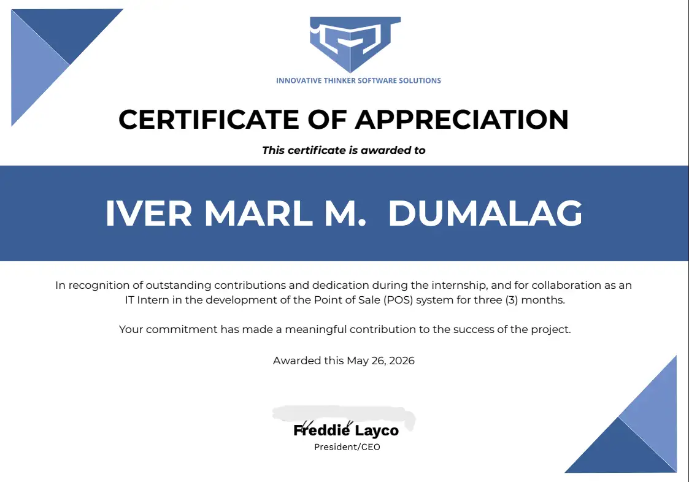

INTERNSHIP CONTRIBUTION
AuditPal-eKaha POS
Frontend + backend development
Practical software for the everyday complexity of retail operations.
Built and integrated 130+ RESTful APIs and full-stack modules across inventory, procurement, discounts, attendance, analytics, cashier operations and online ordering.
RESTful APIs / Full-stack modules
NO PUBLIC REPOSITORY